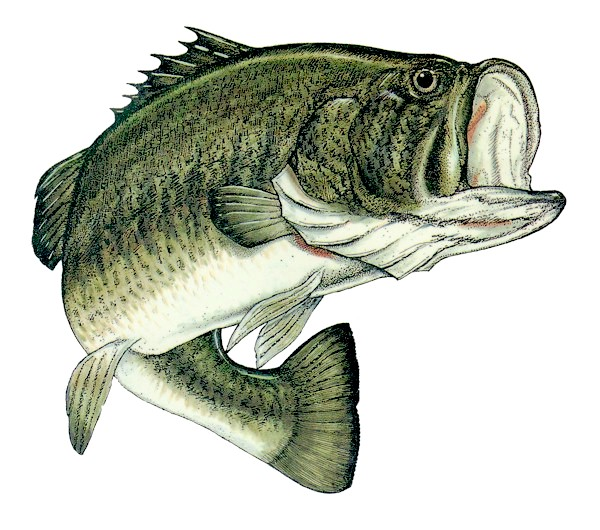
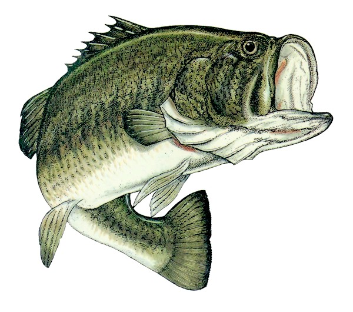

Homepage
HomepageLife as a Blackbear My Family Hobbies

 

My father has been someone that I have looked up to for all of my life. He grew up in Reading, MA and went to college to play baseball at Holy Cross in Worchester, MA. He went on to marry my mother Kimberly and had my sister and I as children shortly after.He started his own investigative company once he got out of college and has been in the industry ever since. He taught me valuable life lessons that I will never forget. I believe that he was one of the most important influences that made me who I am today.
When it comes to role models for a teenage kid, my mother is second to none. As a child she moved all over the United States. For her early years, she spent most of her time living in Honolulu, Hawaii and San Diego, California. She eventually moved to the north shore of Massachusetts that she would raise me and my younger sister. She taught me how to be personally respnsible for my actions. This was taught through countless groundings and other discipline tactics. She could be harsh at times, but whatever she did, it worked.
Most brother/sister relationships are filled with non stop fighting and bickering. However, over the years, my sister and I have grown to be very close. She is currently a junior at North Andover High School in Massachusetts and strives to do very well in her academics, earning a 4.5 GPA through her first two years of high school. She is a great sister to have and I'm sure that she will become extremely successful in whatever path she takes in life.